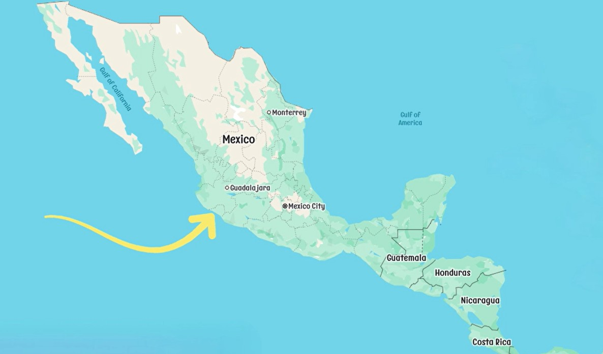
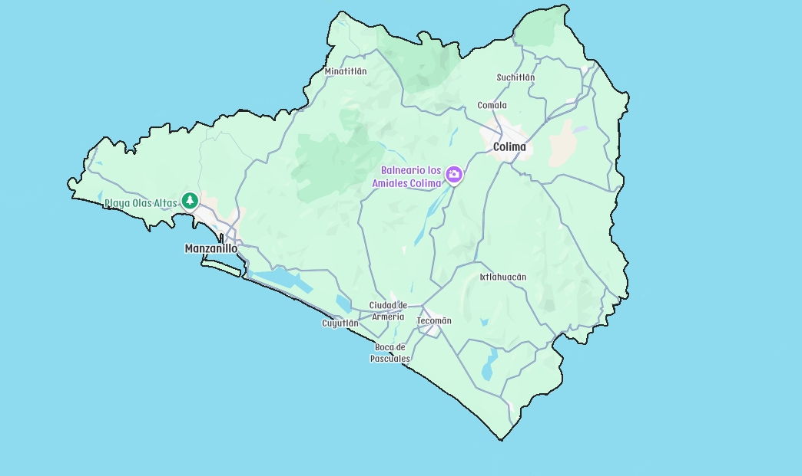
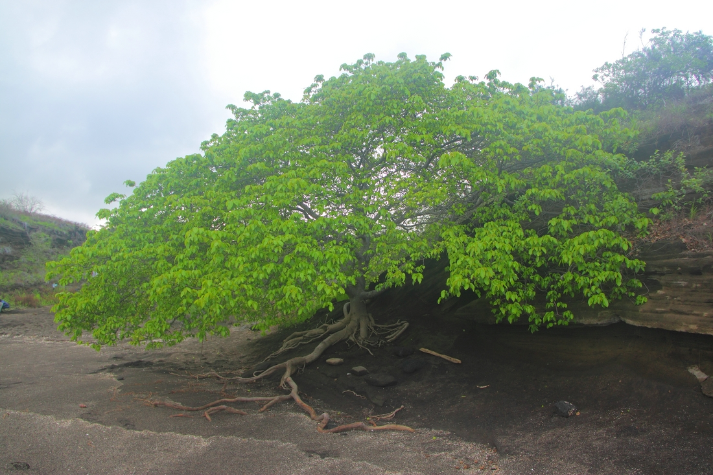
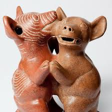

Where is Manzanillo?



How Manzanillo Got Its Name
Over the past 500 years, Manzanillo has had several names, including Cozcatlán, Tlacotla, and Caxitlán. Its current name comes from the manzanilla tree, once abundant along the coast. The tree’s wood was valued for shipbuilding because it is strong, flexible, and resistant to water. Although its small fruit resembles an apple, it is poisonous, making the tree both useful and dangerous.In 1825, the last remaining manzanilla tree was cut down to protect local residents.
Perritos Colimotes
Los perritos colimotes are pre-Hispanic red clay figures from Colima, often shown in pairs as if dancing. Found mainly in shaft tombs dating from 300 to 600 CE, they are believed to symbolize companionship, protection, and the transmission of wisdom, while also serving as guides for souls in the afterlife.
